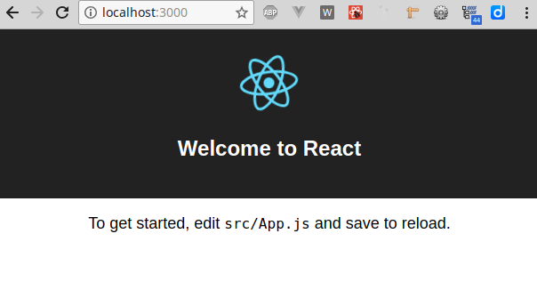
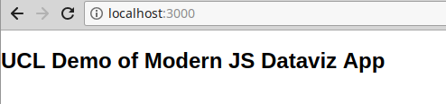
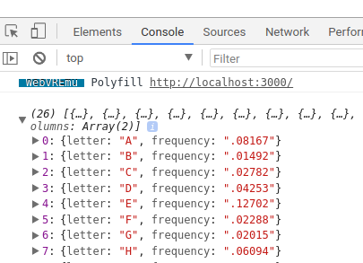
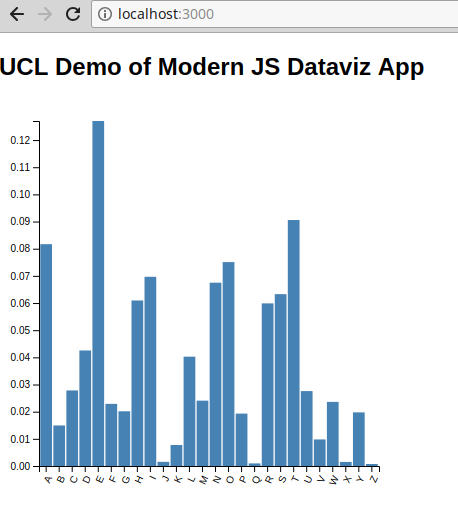

Working with script tags can be awkward. The order loading is important and delegating it to the HTML page just feels wrong for a programmer...
As a programmer you want to maintain your own modular libraries, easy to reuse and repurpose. For that a decent import system is essential.
Modern JS (ES6+) has a rather good import system (arguably better than Python's) and the proof is in the pudding. Once you've used it it's hard to imagine going back to clunky script tags. Genuine productivity benfits lie to hand...
But there's more than just imports and modular decomposition. There's a lot of great syntactic "sugar" available in modern JS. And being able to access this without worrying about particular browser dependencies is the real issue at hand...
...
Success! Created ucl-modern-js at /home/kyran/.../ucl-modern-js
Inside that directory, you can run several commands:
yarn start
Starts the development server.
yarn build
Bundles the app into static files for production.
yarn test
Starts the test runner.
yarn eject
Removes this tool and copies build dependencies, configuration files
and scripts into the app directory. If you do this, you can’t go back!
We suggest that you begin by typing:
cd ucl-modern-js
yarn start
> yarn start
[...]
Compiled successfully!
You can now view ucl-modern-js in the browser.
Local: http://localhost:3000/
On Your Network: http://192.168.1.188:3000/
Note that the development build is not optimized.
To create a production build, use yarn build.
Head to your browser with address http://localhost:3000 and you can see the React intro screen.
As per the message on the root page:
To get started, edit src/App.js and save to reload.
Changes made to the code will be hot-loaded to the browser, making for a pretty efficient, responsive work flow.
ucl-modern-js ├── package.json ├── node_modules ├── public │ ├── favicon.ico │ ├── index.html │ └── manifest.json ├── README.md ├── src │ ├── App.css │ ├── App.js │ ├── App.test.js │ ├── index.css │ ├── index.js │ ├── logo.svg │ └── registerServiceWorker.js └── yarn.lock
package.json - keeps track of node modules being used and other housekeeping.
node_modules - directory where libraries installed using `npm` or `yarn` are installed.
public directory - where compiled files are built and served (e.g. `yarn build`)
public/index.html - root page for the app (with compiled JavaScript appended as, usually, `bundle.js`)
README.md - replace this with some useful info on, for example, running app, selected dependencies, any data requirements or assumptions (e.g. data schema for visualization)
src directory contains JavaScript and CSS. Files here are compiled by `yarn build` into a single, servable JS bundle. (demo)
Change the title in the index.html file:
UCL Modern JS Demo App
The boilerplate index.js file. Note that we can import css files directly, instead of using a link tag in our index.html file:
// index.js
import React from 'react';
import ReactDOM from 'react-dom';
import './index.css';
import App from './App';
import registerServiceWorker from './registerServiceWorker';
ReactDOM.render(<App />, document.getElementById('root'));
registerServiceWorker();
remove React elements (and semi-colons, for personal preference)
import './index.css'
Let's install D3 (who needs <script> tags?), using node's npm installer:
➜ ucl-modern-js git:(master) ✗ yarn add d3
yarn add v1.3.2
warning ../../../../../package.json: No license field
[1/4] Resolving packages...
[2/4] Fetching packages...
info fsevents@1.2.4: The platform "linux" is incompatible with this module.
info "fsevents@1.2.4" is an optional dependency and failed compatibility check. Excluding it
allation.
[3/4] Linking dependencies...
[4/4] Building fresh packages...
success Saved lockfile.
success Saved 35 new dependencies.
├─ d3-array@1.2.1
├─ d3-axis@1.0.8
├─ d3-brush@1.0.4
├─ d3-chord@1.0.4
├─ d3-collection@1.0.4
├─ d3-color@1.2.0
...
Let's install D3 (who needs <script> tags?), using node's npm installer:
{
"name": "ucl-test",
"version": "0.1.0",
"private": true,
"dependencies": {
"d3": "^5.4.0", <<-----
"react": "^16.4.0",
"react-dom": "^16.4.0",
"react-scripts": "1.1.4"
},
"scripts": {
"start": "react-scripts start",
"build": "react-scripts build",
"test": "react-scripts test --env=jsdom",
"eject": "react-scripts eject"
}
}
We can now import D3 into our project:
import * as d3 from 'd3'
This gives the familiar d3 object, just like the loaded script.
But we can load individual modules, which saves a bit of bandwidth:
import {select, selectAll} from 'd3'
Let's use D3 to add a title to our app:
// index.js
import './index.css'
import {select, selectAll} from 'd3'
select("#root")
.append("h2")
.text("UCL Demo of Modern JS Dataviz App")
Let's use D3 to add a title to our app:
// index.js
import './index.css'
import {select, selectAll} from 'd3'
select("#root")
.append("h2")
.text("UCL Demo of Modern JS Dataviz App")
The title rendered in the browser

To make data available to the app we'll add a data directory to the public directory. We'll use a classic dataset, giving the frequency of letters in the English language.
// public/data/letters.tsv
letter frequency
A .08167
B .01492
C .02782
D .04253
E .12702
F .02288
G .02015
H .06094
...
A quick test to make sure we can load the dataset (note that D3 converts the tsv to a JS object). D3's new (v4) tsv convenience method uses JavaScript promises to provide the data from an AJAX request.
// index.js
import * as d3 from "d3"
// ...
d3.tsv("data/letters.tsv")
.then((data) => {
console.log(data)
})
Use the browser tools (Chrome in this case) to inspect the logged data:
We're aiming to create a barchart plugin we can use in the following way:
import Barchart from './Barchart'
//...
d3.tsv("data/letters.tsv")
.then((data) => {
let bc = Barchart()
.xField("letter")
.yField("frequency")
d3.select("#root")
.append("div")
.datum(data) // datum binds data to single element
.style("width", "400px")
.style("height", "400px")
.attr("class", "barchart")
.call(bc)
})
The barchart call will produce the following browser output:
A basic plugin skeleton:
export default function() {
// API VARIABLES
let xField, yField
let xAxisTitle = null, yAxisTitle = null
let margin = {top:20, right:20, bottom:35, left:40}
// api function to return on call
function api(selection) {
selection.each(function(data){
let chartHolder = d3.select(this)
// DIMENSIONS
// SCALES
// SET SCALE DOMAINS BASED ON DATA
// AXES
// SVG CHART HOLDER
// ADD AXES SVG GROUPS
// BUILD X AND Y AXES
// MAKE BARS FROM DATA
})
}
// API METHODS
api.xField = function(_xField){
xField = _xField
return api
}
return api
}
// API VARIABLES
let transDuration = 2000
let title = null
let xField, yField
let xAxisTitle = null, yAxisTitle = null
let margin = {top:20, right:20, bottom:35, left:40}
// DIMENSIONS
let chartHolder = d3.select(this)
let boundingRect = chartHolder.node().getBoundingClientRect()
let width = boundingRect.width - margin.left - margin.right,
height = boundingRect.height - margin.top - margin.bottom
// SCALES
let xScale = d3.scaleBand()
.range([0, width])
.padding(0.1)
let yScale = d3.scaleLinear()
.range([height, 0])
// SET SCALE DOMAINS BASED ON DATA
xScale.domain( data.map(function(d) { return d[xField] }) )
yScale.domain([0, d3.max(data, function(d) { return +d[yField] })])
// AXES
let xAxis = d3.axisBottom()
.scale(xScale)
let yAxis = d3.axisLeft()
.scale(yScale)
// SVG CHARTHOLDER
let svg = chartHolder
.selectAll("svg")
.data([null]).enter()
.append("svg")
.attr("width", width + margin.left + margin.right)
.attr("height", height + margin.top + margin.bottom)
.append("g")
.attr("transform", "translate(" + margin.left + "," + margin.top + ")")
// ADD AXES SVG GROUPS
svg.append("g")
.attr("class", "x axis")
.attr("transform", "translate(0," + height + ")")
svg.append("g")
.attr("class", "y axis")
.append("text")
.attr("id", "y-axis-label")
.attr("transform", "rotate(-90)")
.attr("y", 6)
.attr("dy", ".71em")
.style("text-anchor", "end")
// BUILD AXES
svg.select(".x.axis")
.transition().duration(transDuration)
.call(xAxis)
.selectAll("text")
.style("text-anchor", "end")
.attr("dx", "-.8em")
.attr("dy", ".15em")
.attr("transform", "rotate(-65)")
svg.select(".y.axis")
.transition().duration(transDuration)
.call(yAxis)
let yLabel = svg.select("#y-axis-label")
yLabel.text(yAxisTitle || yField)
// BUILD BARS WITH AN UPDATE PATTERN
let bars = svg.selectAll(".bar")
.data(data, function(d) {
return d[yField]
})
bars.enter().append("rect")
.attr("class", "bar")
.attr("x", 0)
.merge(bars)
.transition().duration(transDuration)
.attr("x", function(d) { return xScale(d[xField]) })
.attr("width", xScale.bandwidth())
.attr("y", function(d) { return yScale(d[yField]) })
.attr("height", function(d) { return height - yScale(d[yField]) })
bars.exit().remove()
// CHAINABLE API METHODS
api.title = function(_title){
title = _title
return api
}
api.xField = function(_xField){
xField = _xField
return api
}
api.yField = function(_yField){
yField = _yField
return api
}
/* Barchart/index.css
import './index.css' */
.barchart {
display: inline-block;
}
.bar {
fill: steelblue;
}
.bar:hover {
fill: brown;
}
.axis--x path {
display: none;
}
You can call the barchart on selections produced by data joining:
d3.tsv("data/letters.tsv")
.then((data) => {
let bc = Barchart()
.xField("letter")
.yField("frequency")
d3.select("#root")
.selectAll(".barchart")
// Divide the data array into two array, by index
.data([data.filter((d,i) => i%2), data.filter((d,i) => !(i%2))])
.enter()
.append("div")
.style("width", "400px")
.style("height", "400px")
.attr("class", "barchart")
.call(bc)
})
importyarn install away